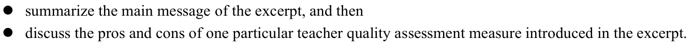
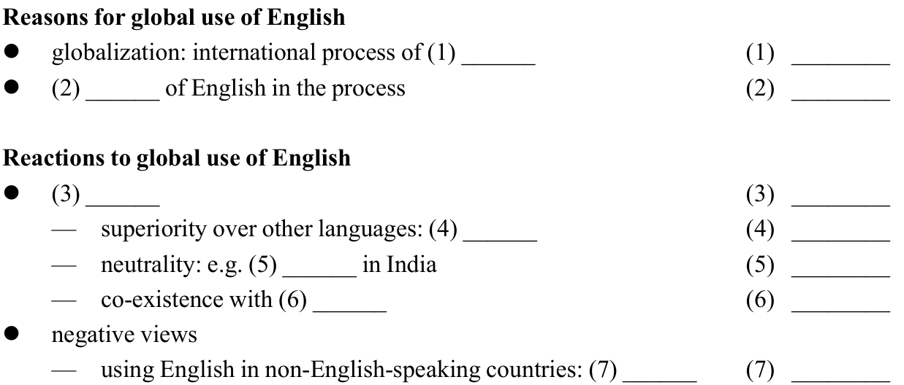

TEST FOR ENGLISH MAJORS (2023)
-GRADE FOUR-
TIME LIMIT: 130 MIN
PART I DICTATION (10 MIN)
Listen to the following passage. Altogether the passage will be read to you four times. During the first reading, which will be done at normal speed, listen and try to understand the meaning. For the second and third readings, the passage, except the first sentence, will be read sentence by sentence, or phrase by phrase, with intervals of 15 seconds. The last reading will be done at normal speed again and during this time you should check your work. You will then be given ONE minute to check your work once more.
Write on ANSWER SHEET ONE. The first sentence of the passage is already provided.
Chinese Civilization
China is a long-standing civilization.
PART II LISTENING COMPREHENSION (20 MIN)
SECTION A TALK
In this section you will hear a talk. You will hear the talk ONCE ONLY. While listening, you may look at the task on ANSWER SHEET ONE and write NO MORE THAN THREE WORDS for each gap. Make sure what you fill in is both grammatically and semantically acceptable. You may use the blank sheet for note-taking.
You have THIRTY seconds to preview the gap-filling task.
Now listen to the talk. When it is over, you will be given TWO minutes to check your work.
SECTION B CONVERSATIONS
In this section you will hear two conversations. At the end of each conversation, five questions will be asked about what was said. Both the conversations and the questions will be spoken ONCE ONLY. After each question there will be a ten-second pause. During the pause, you should read the four choices of A, B, C and D, and mark the best answer to each question on ANSWER SHEET TWO.
You have THIRTY seconds to preview the choices.
Now, listen to the conversations.
Conversation One
Questions 1 to 5 are based on Conversation One.
4.
5.
Conversation Two
Questions 6 to 10 are based on Conversation Two.
6.
7.
9.
10.
PART III LANGUAGE USAGE (10 MIN)
There are twenty sentences in this section. Beneath each sentence there are four options marked A, B, C and D. Choose the one that best completes the sentence or answers the question. Mark your answers on ANSWER SHEET TWO.
11. The department secretary was ______ the guest speaker at the station at 10 this morning, but the speaker’s journey
was canceled on a short notice.
12. If you need me to help with your teleconferencing arrangements, I can be reached with the touch of a single button
on ______ special phone of Harry’s.
13. Advocates of studying abroad believe students will reach new levels of intercultural understanding far exceeding
what they ______ be able to accomplish just at home.
14. In order that no further damage ______, it is crucial that you get the wounded back to the intensive care unit as
quickly as possible.
15. Sometimes a written message succeeds ______ an oral one fails; at other times, talking to the recipient will
produce results that the printed word can’t match.
16. From the outside, the two start-up companies’ partnership looks like ______ story.
17. It is easy to think you understand another person, ______ later that you were wrong.
18. What is the function of the present progressive in “My neighbor is always playing loud music at midnight”?
19. Which of the following reflexive pronouns expresses emphasis?
20. “People who are sensitive can appreciate art better.” The relative clause in this sentence ______.
21. For whatever ______. I know everyone would have been incredibly proud of you tonight.
22. We are so delighted to have you here; it is not often we are consulted by men of science, especially one of your
______.
23. It is recently found that two colleagues who are ______ basketball fans or share a fascination with rare books are
more likely to swap information on work.
24. As her mind reeled back in time, she wondered what she could possibly have done ______.
25. When transmission speed is prioritized, instant messaging can beat both e-mail and telephone in ______.
26. The university has a policy of hiring men and women of a variety of ages and cultures because diversity of
experience and perspective gives it a competitive ______.
27. ______ the travel and business sections of any decent bookstore, and you’re likely to find many volumes detailing
kaleidoscopic cultures around the world.
28. Turning a blind eye to intracultural variations can lead to ______ people from different backgrounds.
29. In North America, first names are seen as friendly and ______ of fondness and attachment.
30. There is growing recognition that businesses that operate in a globalizing economy need a universal ______ of
business ethics.
PART IV CLOZE (10 MIN)
Decide which of the words given in the box below would best complete the passage if inserted in the corresponding blank. The words can be used ONCE ONLY. Mark the letter for each word on ANSWER SHEET TWO.
Edward Hopper (1882-1967) is something of a success, if only his success had come swifter. At the age of 40, he was a failing artist who (31) ______ to sell a single painting. As he approached 80, Time magazine (32) ______ him on its cover. Today, half a century after his death, Hopper is considered a giant of modern expression, with an uncanny, unforgettable, and utterly (33) ______ sense for mood and place.
Much of Hopper’s work excavates modern city experience. In canvas (34) ______ canvas, he depicts diners, cafes, streetlights, gas stations, train stations, and hotel rooms. The scenes are marked by vivid color juxtapositions and stark, theatrical lighting, as well as by harshly contoured figures, who appear at once part of, and (35) ______ to, their surroundings. The ambiance throughout his repertoire is of loneliness, and psychological tension, whereas his rural or coastal scenes offer a strong (36) ______ of tranquility or optimism.
Realistic (37) ______ they may seem, Edward Hopper’s paintings are not mere representations of supposed reality. They deconstruct and reconstruct the real, transforming it beyond the purely experiential. Like the views Hopper regularly included as pictures within his pictures, a characteristic Hopper composition is not first and foremost an image of (38) ______ fact but rather a gestalt created out of breakdown and fracture in the process of perception and indeed the capacity to perceive. His works have (39) ______ been dubbed metaphors of silence. Just as all utterance is governed by what remains unsaid, and by silence, so too Hopper’s art has its center of gravity in what is not actually visible in the paintings. Hopper’s art enacts ways of seeing and understanding that anchor (40) ______ situations in profound depths.
PART V READING COMPREHENSION (35 MIN)
SECTION A MULTIPLE CHOICE QUESTIONS
In this section there are three passages followed by ten multiple choice questions. For each multiple choice question, there are four suggested answers marked A, B, C and D. Choose the one that you think is the best answer and mark your answers on ANSWER SHEET TWO.
PASSAGE ONE
(1) Pairing the words “baby” and “sleep” can evoke strong emotions. Those who have had limited contact with little ones might interpret this word-combination as implying deep and prolonged slumber. For others, this union of words may elicit memories of prolonged periods of chaotic sleep (or what can feel like no sleep at all).
(2) Coping with the way babies sleep can be difficult. It’s not that babies don’t sleep. In fact, they sleep more than at any other stage of life. It’s more an issue of when they sleep. Newborns start by sleeping and waking around the clock. This is not always easy for parents. There is even research suggesting that in adults waking repeatedly at night can feel as bad as getting hardly any sleep in terms of attentional skills, fatigue levels and symptoms of depression.
(3) As to why infants wake at night, this is best explained by thinking about the two things that govern our sleep: the homeostatic and circadian processes. The crux of the homeostatic process is the straightforward idea that the longer we have been awake the greater our sleep drive (and the more sleepy we feel). It may take an adult an entire day to build up enough sleep drive to fall asleep at bedtime, but an infant may only need an hour or two of wakefulness before being able to drift off to sleep.
(4) The second process is circadian, which works like a clock. Adults typically feel more awake during the morning hours and sleepy at night, regardless of when we last slept. In very young babies this process is not yet developed. This means that sleep is more likely to occur at different points across the 24hour day.
(5) Practically speaking, the immaturity of these two processes means that that newborn babies are actually expected to wake at night: they are doing exactly what they are supposed to do! They start life with small stomachs which need to be filled regularly so your child can gain strength and stay hydrated, so it’s a good thing that they are waking regularly to feed. As hard as disturbed sleep can be for caregivers, a waking baby is a good thing.
(6) But how long might this continue? The parenting mantra “this too shall pass” is true when it comes to dealing with certain aspects of a baby’s sleep. Night wakings typically become less frequent as an infant grows up, and sleep changes in other ways throughout a person’s life. For example, sleep length reduces and there are changes in sleep architecture (or composition of Rapid Eye Movement, REM, and Non-Rapid Eye Movement, NREM, sleep). A premature baby’s sleep cycle might take just 45 minutes, whereas an adult’s can be double that at 90 minutes. Other changes also occur; for example, whereas babies’ sleep cycles start with REM-like sleep, adults start with NREM sleep.
(7) For some parents, knowing that sleep changes throughout life is enough to help them cope with an infant’s night awakenings. In fact, sleep education alone can help some parents to deal with infant sleep. Other parents want more detailed information, such as about babies’ sleep schedules, bedtime routines, sleep problems, sleep safety, sleep environment, naps, sleep training, and special circumstances. We provide all this information, and more, on our website, where physicians, psychologists, and researchers from the Pediatric Sleep Council have also answered hundreds of questions about sleep via video and text.
(8) Remember: sleep matters. Experts agree that sleep is essential for health, growth and general development. It is important not just for babies, but for parents too. If we can improve sleep within a family, and create a happy association between the words “baby” and “sleep”, then the Pediatric Sleep Council has achieved its goal.
41. According to the passage, the difficulty in handling baby sleep lies in not knowing ______.
42. In explaining the circadian process, the author has used ______ more than other means.
43. Which of the following statements is CORRECT about baby sleep?
44. Which of the following is the most appropriate title for the passage?
PASSAGE TWO
(1) Roie Galitz’s adventurous spirit has quite literally driven him to the ends of the Earth. He has made several excursions to the Arctic islands of Svalbard and the ice sheets of Antarctica. He has also been to the snowy plain of Norway and the wild waters of Kamchatka, Russia — all in the hopes of capturing some of the Earth’s most elusive creatures.
(2) The photographer comes from Tel Aviv, Israel. He first fell in love with wildlife photography in the sweltering savannas of Tanzania, Africa. Galitz says he prefers to work in the cold — even when that can mean temperatures as low as 40 degrees below zero. He layers up multiple pairs of long trousers, fleece shirts and the thickest wool socks he can find. On top of all of that, he wears an 8-pound Arctic suit. “When you’re cold, you can always put on an extra layer,” he says. “But when you’re hot, there is a legal limit to how much you can remove.”
(3) Extreme environments are also where he finds his favorite photography subjects: animals that are rarely viewed in the wild.
(4) “If I showed things that have been viewed time and time again, it wouldn’t be special. It wouldn’t be unique,” Galitz says. “It would just be like photographing a sparrow. Who cares about a sparrow? Everybody sees them all the time. As a photographer, I always try to find what has been done, what hasn’t been done, why it hasn’t been done — then try to do it.”
(5) One photo that captures Galitz’s quest features a polar bear with a live seal in its grasp. This moment of the hunt had rarely, if ever, been photographed before. Local bear experts doubted that Galitz would be able to get the shot. But after a long night of silently kneeling on the ice, fighting to stay warm but remaining still so as not to disturb the seals swimming below — he got the shot.
(6) Venturing into the wild comes with some risk, from frostbite to close encounters with bears and walruses. Galitz takes it all in stride. A minor case of frostbite in the Arctic is like getting a sunburn at the beach, he says. And the cold forces him to be resourceful. On multiple occasions, he has used his nose to operate the touch screen on his camera. Sometimes, though, he will quickly remove his gloves to snap the shot.
(7) Wildlife photography requires a certain spirit, Galitz says. For many of the far-off places he chooses to shoot, he has to obtain production permits and coordinate the often-complicated logistics of getting there. But the planning pays off, he says, when he gets the perfect shot. In a photo titled “Polar Bear Family Hug”, he captured two cubs and a mother bear in a moment of vulnerability as they awoke from a nap.
(8) “That’s actually the best compliment a wildlife photographer can ask for,” Galitz says. “Because when an animal is sleeping in front of you, it means she trusts you.”
(9) In another photo of brown bears playing together in Lake Kuril in Russia, Galitz laid low to the ground and took shot after shot. He was trying to capture the symmetry of the bears’ open mouths. “With wildlife, you control the scene by controlling yourself,” he says, referring to his position in relation to his furry subjects. You can’t tell a bear to strike a pose or turn toward the light. So for a wildlife photographer, Galitz explains, it’s all about the technique.
(10) In addition to stunning action shots, Galitz also looks to capture moments that will elicit specific feelings from the viewer. “When I’m photographing the animals, I’m trying to show their character, their soul,” he says. Many of his photos depict animals in moments of closeness — courting, parenting, cuddling — to demonstrate their individual personalities and familial relationships. “I’m trying to make people relate to animals in an intimate way, as I am relating to animals in an intimate way,” he says.
(11) Galitz also regularly uses his photography to promote conservation efforts. Looking at his photos from year to year, he says he can see the world changing and the habitats of the animals he photographs disappearing. “My images are testimony,” he says. “This is what I saw last year, this is what I saw here, you can see the difference. We can’t ignore that.”
45.Which of the following statements is CORRECT about Galitz?
46. Which of the following is NOT mentioned as a requirement for a wildlife photographer?
47.Galitz’s wildlife photos focus on the following EXCEPT ______.
PASSAGE THREE
(1) It was a big, squarish frame house that had once been white, decorated with cupolas and spires and scrolled balconies in the heavily lightsome style of the seventies, set on what had once been our most select street. But garages and cotton gins had encroached and obliterated even the names of that neighborhood; only Miss Emily’s house was left, lifting its stubborn and coquettish decay above the cotton wagons and the gasoline pumps — an eyesore among eyesores.
(2) Alive, Miss Emily had been a tradition, a duty, and a care; a sort of hereditary obligation upon the town, dating from that day in 1894 when Colonel Sartoris, the mayor — he who fathered the edict that no Negro woman should appear on the streets without an apron-remitted her taxes, the dispensation dating from the death of her father on into perpetuity. Not that Miss Emily would have accepted charity. Colonel Sartoris invented an involved tale to the effect that Miss Emily’s father had loaned money to the town, which the town, as a matter of business, preferred this way of repaying. Only a man of Colonel Sartoris’ generation and thought could have invented it, and only a woman could have believed it.
(3) When the next generation, with its more modern ideas, became mayors and aldermen, this arrangement created some little dissatisfaction. On the first of the year they mailed her a tax notice. February came, and there was no reply. They wrote her a formal letter, asking her to call at the sheriff’s office at her convenience. A week later the mayor wrote her himself, offering to call or to send his car for her, and received in reply a note on paper of an archaic shape, in a thin, flowing calligraphy in faded ink, to the effect that she no longer went out at all. The tax notice was also enclosed, without comment.
(4) They called a special meeting of the Board of Aldermen. A delegation waited upon her, knocked at the door through which no visitor had passed since she ceased giving china-painting lessons eight or ten years earlier. They were admitted by the old Negro into a dim hall from which a stairway mounted into still more shadow. It smelled of dust and disuse — a close, dank smell. The Negro led them into the parlor. It was furnished in heavy, leather-covered furniture. When the Negro opened the blinds of one window, they could see that the leather was cracked; and when they sat down, a faint dust rose sluggishly about their thighs, spinning with slow motes in the single sunray. On a tarnished gilt easel before the fireplace stood a crayon portrait of Miss Emily’s father.
(5) They rose when she entered-a small, fat woman in black, with a thin gold chain descending to her waist and vanishing into her belt, leaning on an ebony cane with a tarnished gold head. Her skeleton was small and spare; perhaps that was why what would have been merely plumpness in another was obesity in her. She looked bloated, like a body long submerged in motionless water, and of that pallid hue. Her eyes, lost in the fatty ridges of her face, looked like two small pieces of coal pressed into a lump of dough as they moved from one face to another while the visitors stated their errand.
(6) She did not ask them to sit. She just stood in the door and listened quietly until the spokesman came to a stumbling halt. Then they could hear the invisible watch ticking at the end of the gold chain.
(7) Her voice was dry and cold. “I have no taxes in Jefferson. Colonel Sartoris explained it to me. Perhaps one of you can gain access to the city records and satisfy yourselves.”
(8) “But we have. We are the city authorities, Miss Emily. Didn’t you get a notice from the sheriff, signed by him?”
(9) “I received a paper, yes,” Miss Emily said. “Perhaps he considers himself the sherif... I have no taxes in Jefferson.”
(10) “But there is nothing on the books to show that, you see. We must go by the…”
(11) “See Colonel Sartoris. I have no taxes in Jefferson.”
(12) “But, Miss Emily…”
(13) “See Colonel Sartoris.(Colonel Sartoris had been dead almost ten years.) I have no taxes in Jefferson. Tobe!” The Negro appeared. “Show these gentlemen out.”
48.Which of the following statements is CORRECT according to Para. 2?
49.Which of the following descriptions matches Miss Emily?
50.Which of the following best characterizes Miss Emily’s personality?
本页部分文字层异常，已保留原图文字区域；这些区域随窗口缩放，暂不能重新换行或复制。
SECTION B SHORT ANSWER QUESTIONS
In this section there are five short answer questions based on the passages in Section A. Answer the questions with NO MORE THAN TEN WORDS in the space provided on ANSWER SHEET TWO.
PASSAGE ONE
51. List two consequences of adults waking repeatedly at night.
PASSAGE TWO
52. What does “Galitz takes it all in stride” in Para.6 mean?
53. What is implied by Glitz’s words “My images are testimony” in Para. 11?
PASSAGE THREE
54. What does “an eyesore among eyesores” (Para. 1) imply about Miss Emily’s house?
55.According to the interior of Miss Emily’s house (Para.4), what can be inferred about her house?
PART VI WRITING (45 MIN)
Read carefully the following excerpt on teacher quality assessment, and then write your response in NO LESS THAN 200 WORDS, in which you should:

Marks will be awarded for content relevance, content sufficiency, organization and language quality. Failure to follow the above instructions may result in a loss of marks.
Write your response on ANSWER SHEET THREE.
Teacher quality assessment commonly includes reviews of qualifications, tests of teaching quality, and observations of teaching practice. Assessments of teacher quality are currently used for policy making, employment, merit-based pay awards, and as data to inform the professional growth of teachers, etc.
Teacher qualifications include a range of variables affecting teacher quality: type of teaching certification, undergraduate major or minor, undergraduate institution, advanced degree(s) or certifications, type of preparation program, test scores, and years of teaching experience. In many countries, teaching credentials represent the main measure of teacher quality and serve as a threshold of holding teaching positions.
Teacher quality with regard to student achievement — also known as “teacher effectiveness”-is measured in terms of student achievement gains. Student achievement is measured through the use of standardized tests to determine the academic growth of students over time.
Assessments of teacher quality may also draw upon evidence collected from observations of teachers’ work that lead to the growth of effective teachers. This evidence may be collected from in-person or video recorded observations of teaching, pre- and post-observation conferences with teachers, and samples of teachers’ work with students. Assessments of teacher practice may examine teacher quality for a single lesson or over an entire school year. Such assessments may be impression-based or narrative in form but have become increasingly more common in teacher quality assessment.
本页部分文字层异常，已保留原图文字区域；这些区域随窗口缩放，暂不能重新换行或复制。
ANSWER SHEET 1
PART II LISTENING COMPREHENSION
SECTION A TALK
Global Use of English

reason: affecting the local language
e.g. making the local language (8) ______ (8) ________ — using English is not (9) ______ (9) ________
reason: particular political and economic goals
e.g. more likely to (10) ______ (10) ________
2023年英语专业四级真题补充卷
说明：本次考试全国出现了两套试题，其中LANGUAGE USAGE的部分试题和CLOZE的试题不同，现将其补充如下：
PART III LANGUAGE USAGE (10 MIN)
There are twenty sentences in this section. Beneath each sentence there are four options marked A, B, C and D. Choose the one that best completes the sentence or answers the question. Mark your answers on ANSWER SHEET TWO.
11. Lucy was ______ the polar expedition a month ago, but she changed her mind at the last minute.
14. It is imperative that the local government ______ more investment into the burgeoning hi-tech industry.
16. Do you know Jack’s cousin? He is ______ than Jack.
17. If you explained the situation to your solicitor, he ______ able to advise you much better than we can.
20. He hurried to the airport, only to find that his flight had been canceled. The infinitive verb phrase only to find is
used ______.
22. By making it possible to search the millions of books that exist today, we hope to expand the ______ of human
knowledge.
25. Before this new policy was implemented, the tax authorities might have a ______ of worries.
26. The findings show that the secret to ______ of the villagers lies in the rich minerals of the underground water.
27. China is commonly regarded as the first country to ______ silkworms and develop silk weaving.
30. Plain-looking as the necklace is, it is known to be an important ______ for the family for centuries.
PART IV CLOZE (10 MIN)
Decide which of the words given in the box below would best complete the passage if inserted in the corresponding blank. The words can be used ONCE ONLY. Mark the letter for each word on ANSWER SHEET TWO.
As a library curator of literary and historical manuscripts and letters, I spend my days in the company of the respectable dead. I’m not the one who brought them together or decided which individuals deserved a place in the magic circle. I serve (31) ______ in the roles of custodian and interpreter, mindful that I am the latest in a long line of collectors and librarians who have cared for the manuscripts of figures from the past. I’ve learned from them, argued with them, and — yes — loved them, not because they were. (32) ______ but because they were humans, and because they granted me such rich works of art. Reading one of their manuscripts is different from reading their work in (33) ______ because writing, as is noted, harbors all sorts of secrets: remainders of the author’s creative decisions and passing thoughts, and (34) ______ of their emotional states in particular moments.
It is impossible, for example, to look at a page from the manuscript draft of The Girl of the Golden West (35) ______ grasping the energy, indeed frenzy — with which Puccini composed. It is the magic of handwriting that allows us to perceive (36) ______ Puccini’s friend Arnaldo Fraccaroli described as the “the thrills of happiness, (37) ______ of sadness, spasms of love” experienced by the composer in the throes of creation. On the other hand, the making of complex works of art. (38) ______ much more than spontaneous outpouring — a fact underscored by the many fragments Proust left behind as he (39) ______ and revised one of the most astonishing works of modern literature — In Search of Lost Time. Filling many notebooks and odd-shaped scraps of paper, Proust did more than transcribe inspired emotions — he labored, over the course of years, on his way to (40) ______.